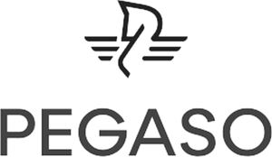

Trade Mark Journal No.2025/049 5 December 2025
WO0000001879095 (7,9,11,37,42)
Office of origin: Italy
Date of International Registration:21 July 2025
Date of designation in the UK:
21 July 2025

International priority date claimed: 27 May 2025
(Italy)
(302025000085606)
- Class 7
- Machines and apparatus for transforming and processing plastics; machines and apparatus for storing granules, flakes and powders in processes for transforming and processing plastics; machines and apparatus for measuring granules, flakes and powders in processes for transforming and processing plastics; machines and apparatus for mixing granules, flakes and powders in processes for transforming and processing plastics; machines and apparatus for feeding granules, flakes and powders in processes for transforming and processing plastics; machines and apparatus for conveying granules, flakes and powders in processes for transforming and processing plastics; machines and apparatus for processing sugar, flour, food powders; hydraulic pumps.
- Class 9
- Software; electronic apparatus and instruments for control, measurement and detection in processes for transforming and processing plastics.
- Class 11
- Machines and apparatus for cooling, heating, air dehumidifying; machines and apparatus for cooling water; machines and apparatus for regulating water temperature; machines and apparatus for dehumidifying and drying granules, flakes and powders in processes for transforming and processing plastics.
- Class 37
- Installation and repair of machines and apparatus for transforming and processing plastics.
- Class 42
- Scientific and technological services and research and design services related thereto.
PEGASO INDUSTRIES S.p.A.
Representative: Swindell & Pearson Ltd, 48 Friar Gate Derby DE1 1GY UNITED KINGDOM